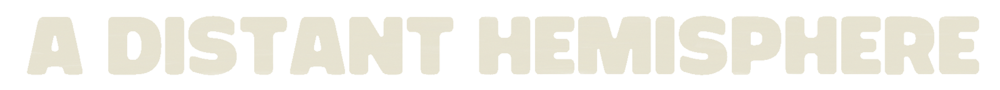

LOADING...
INITIALIZE
BUILD v119 © 2026 in8t10n Studio
ABOUT
PLAY
A.I.GEN
// Field Notes
B1 — Standard brick; reflects the ball.
B2 — Standard Brick w/ Attitude.
B3 — 2x Tough Brick.
B4 — Phase brick; ball passes through.
B5 — Indestructable Brick.

BACK
MAIN MENU
SKIP